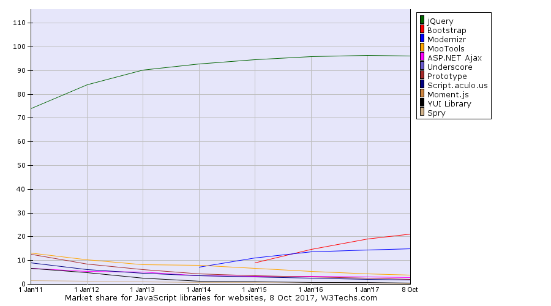
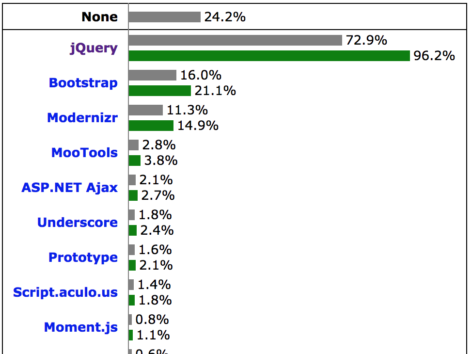

jQUERY
use the arrow keys to navigate; press space for slide overviewJQuery
About jQuery
Why jQuery?
- Popular library, used by big companies (Google, Amazon, Microsoft, Dell, EA, Mozilla, Wordpress, ...)
- Even works in IE6
- Easy to use: built around CSS Selectors
- Can be used with other libraries
- Does not extend the DOM
- Lots of high quality plugins available
- Great documentation/information
How popular is jQuery Exactly?
- 1 in every 2 of the top 10K websites is using jQuery  
- jQuery is used by 44.1% of all top 10K websites
(JS market share 84.7%)
History

- June 2005:
-
August 2005:
- John Resig digs the idea of Behaviour but dislikes the syntax and notes a few shortcomings. He proposes something that eventually will become jQuery on his blog
-
January 2006:
- John Resig attended Barcamp NYC and announced jQuery
-
August 2006:
- jQuery 1.0 released
Versions (1)
-
August 2006, jQuery 1 released:
- first stable jQuery version
- support for modern browsers and IE6+
-
August 2013, jQuery 2 released:
- support for IE8 and lower dropped
- results in 12% smaller file
- custom builds (since jQuery 1.8) allow file sizes as little as 10kb
- API equivalent with jQuery 1.9, where lots of inefficient and inconsistent functionality was removed
-
July 2016, jQuery 3 released:
- jQuery 3.0 (modern browsers, IE9+) and jQuery 3.0 Compat (also IE8)
- a few rather technical changes / additions compared to jQuery 2
Note: jQuery versions follow the semver specifications, i.e MAJOR.MINOR.PATCH:
- MAJOR version when you make incompatible API changes
- MINOR version when you add backwards-compatible functionality
- PATCH version when you make backwards-compatible bug fixes
Versions (2)
General guidelines for choosing a version:
- By default, use jQuery Compat 3. It has support for the widest variety of browsers including IE8, Opera 12, Safari 5 etc...
- If you target leading-edge browsers only, use jQuery 3
- If for some obscure reason you need support for prehistoric browsers like IE6, stick to jQuery 1
jQuery Documentation
-
Meet your new home:
- jQuery API — Look up functions
-
Also worth checking
- jQuery Cheatsheet — Quick overview with access to the API
- jQuery on W3Schools — good ol' W3Schools
- learn.jquery.com — jQuery introduction and tutorials (new)
Including jQuery (1)
-
Download jQuery from jQuery.com; basic page structure:
<!doctype html> <html lang="en"> <head> <title>Including jQuery</title> <meta charset="utf-8"> </head> <body> <h1>Including jQuery</h1> <script src="demos/03_jquery/jquery.min.js"></script> <script> jQuery(document).ready(function() { console.log('loaded'); }); </script> </body> </html>
The lazy way of including jQuery is with a simple link to a Google hosted library, but it tends to slow down your page, and you won't be able to work on your website offline (e.g. in a train). Therefore I would strongly advice to include it locally.
Including jQuery (1)
-
JQuery uses the $ shorthand:
... // wait till the DOM has loaded $(document).ready(function() { console.log('loaded'); }); ...
The lazy way of including jQuery is with a simple link to a Google hosted library, but it tends to slow down your page, and you won't be able to work on your website offline (e.g. in a train). Therefore I would strongly advice to include it locally.
Including jQuery (3)
-
If you need not only the DOM to be loaded but also all images, videos etc...
... // wait till the DOM and all resources have loaded $(window).on('load', function() { console.log('loaded'); }); ...
Including jQuery (4)
-
If you have stuff outside the main load function, you will still need the self executing anonymous wrapper function:
... ;(function() { 'use strict' // variables and functions // ... // wait till the DOM and all resources have loaded $(window).on('load', function() { // everything loaded console.log('loaded'); // event handling here // ... }); })(); ...
Including jQuery (5)
-
There are more libraries using $ as shorthand, which could conflict with jQuery. Therefore, some frameworks like Wordpress will disable the jQuery shorthand right after including jQuery:
... <script src="demos/03_jquery/jquery.min.js"></script> <script> $.noConflict(); // disable $ shorthand </script> ...
Including jQuery (6)
-
If you still wish to use the $ shorthand in your code, pass jQuery as parameter to $, resulting in this final structure:
... <script src="demos/03_jquery/jquery.min.js"></script> <script> ;(function($) { 'use strict' // variables and functions here // ... // wait till the DOM and all resources have loaded $(window).on('load', function() { // or use $(document).ready() // everything loaded console.log('loaded'); // event handling here // ... }); })(jQuery); </script> ...
jsFiddle playground
-
A great playground for testing scripts is jsFiddle; try it out with these fragments (select jQuery framework):
<div id="flip">Click to slide the panel down or up</div> <div id="panel">Hello world!</div>#panel, #flip { padding: 5px; text-align: center; background-color: #e5eecc; border: solid 1px #c3c3c3; } #panel { padding: 50px; display: none; }$("#flip").click(function(){ $("#panel").slideToggle("slow"); });
JQuery
jQuery basics
jQuery selectors (1)
- jQuery is built around the
jQueryfunction (shorthand notation$) -
Pass any CSS3 selector to this function to select elements:
<ul id="menu"> <li><a href="#">item1</a></li> <li class="active"><a href="#">item2</a></li> <li><a href="#">item3</a></li> <li><a href="#">item4</a></li> </ul>var menulinks = $('#menu a[href]'); var activelink = $('#menu .active a[href]'); var lastlink = $('#menu a[href]:last-child');
- some uncommonly used CSS3 selectors not supported though.
- full list of possible selectors on jQuery API
jQuery selectors (2)
-
Some basic examples:
// select element by ID $('#myId'); // select elements by class name $('div.myClass'); // select elements by attribute $('input[name="first_name"]'); // select elements by compound CSS selector $('#contents > ul.people li'); // select elements using a pseudo selector $('ul li:nth-child(2)');
jQuery selectors (3)
-
jQuery has augmented the selector possibilities by adding their own extras such as
// select all elements that are currently being animated $(':animated'); // select all button elements and elements of type button. $(':button'); // select all elements that have no children (including text nodes). $(':empty'); // select elements having at least one child matching the specified selector. $('div:has(p)'); // select parent $('td:parent');-
Note: These selectors are slow, as they cannot be passed directly into the native — thus fast —
document.querySelector(All)
-
Note: These selectors are slow, as they cannot be passed directly into the native — thus fast —
jQuery object
- The result of a jQuery selection is not a DOM node or list back, but a jQuery object, so DOM properties like
innerHTMLorstylewon't work:var activelink = $('#menu .active a[href]'); // jQuery object, no DOM var lastlink = $('#menu a[href]:last-child'); // jQuery object, no DOM lastlink.style.color = '#090'; // won't work! var next = activelink.nextElementSibling; // won't work! console.log(activelink.innerHTML); // won't work!
You can learn a great deal by inspecting a random jQuery object. Try running this command in the slideshow exercise from the labs for example:
console.log(document.querySelector('#photoBig')); // DOM
console.log($('#photoBig').first()); // jQueryA jQuery wraps the result in a jQuery object, with lots of functions attached to prototype. Compare
var test1 = querySelector('#nonExisting'); // null
var test2 = $('#nonExisting'); // jQuery
console.log(test1); // null
console.log(test2); // jQuery object
console.log(test1 ? 'bestaat wel' : 'bestaat niet'); // 'bestaat niet'
console.log(test2 ? 'bestaat wel' : 'bestaat niet'); // 'bestaat wel'
console.log(test2.length ? 'bestaat wel' : 'bestaat niet'); // 'bestaat niet'The first returns null (= not a DOM node), the second still returns a jQuery object, albeit containing no found DOM nodes. Now compare
console.log(querySelectorAll('img')); // DOM node collection
console.log($('img')); // jQuery object
The first returns a collection, meaning you will need a for-loop to set properties like style or innerHTML. The second returns a single jQuery object; jQuery's equivalent .css() or .text() e.g. will automatically iterate over the results.
jQuery methods
- jQuery has its own set of properties (very few,
lengthis the only interesting) and methods (lots of them):var activelink = $('#menu .active a[href]'); // jQuery object var lastlink = $('#menu a[href]:last-child'); // jQuery object lastlink.css('color', '#090'); // ok var next = activelink.next(); // ok console.log(activelink.text()); // ok - jQuery uses methods instead of propertes
jQuery method chaining
- Using methods allows chaining:
$('#p1').next().text('hi!').css('color', 'green').delay(5000).slideUp(2000); - huge advantage over native Javascript
Prefix suggestion
- usually your code will contain a mix of DOM and jQuery objects, so for clarity you may wish to prefix jQuery objects with $:
var $links = $('#menu a[href]'); // jQuery object var $lastlink = $('#menu a[href]:last-child'); // jQuery object var menu = document.getElementById('menu'); // DOM object var activelink = menu.querySelector('.active a'); // DOM object $lastlink.css('color', '#090'); console.log(activelink.innerHTML); - you don't have to, but I'll use the prefix from now on
jQuery to DOM
-
Use get() or [] to pull underlying DOM objects from a jQuery object
var $links = $('#menu a[href]'); // jQuery object var all = $links.get(); // array of DOM elements var first = $links.get(0); // single DOM element var first = $links[0]; // same result, but faster
DOM to jQuery
-
Wrap DOM element(s) in $(...) to make it a jQuery object:
var all = document.querySelectorAll('#menu a[href]'); // array of DOM elements var menu = document.getElementById('menu'); // DOM element var $links = $(all); // jQuery object var $menu = $(menu); // jQuery object
Iterating a selection (1)
- you could theoretically use a
forloop andeq()to iterate over a jQuery selection:<p>bresaola</p> <p>pancetta</p> <p>andouille</p> <div id="message">paragraph texts: </div>var $test = $('p'); for (var i = 0; i < $test.length; i++) { $('#message').append($test.eq(i).text() + ' '); }
Iterating a selection (2)
- better is to use jQuery's
each():var $test = $('p'); $test.each(function() { $('#message').append($(this).text() + ' '); }); - if you need the iterator:
var $test = $('p'); $test.each(function(i) { $('#message').append('(' + i + ') ' + $(this).text() + ' '); });
Iterating a selection (3)
- beware!
thisrefers to the DOM node, so wrap to$(this):var $test = $('p'); $test.each(function() { $('#message').append('paragraph text: ' + $(this).text() + '; '); }); - or use DOM properties instead:
var $test = $('p'); $test.each(function(i) { $('#message').append('paragraph text ' + i + ': ' + this.innerHTML + '; '); });
Iterating a selection (4)
- jQuery methods automatically iterate over selections; this
var $test = $('p'); $test.each(function() { $(this).css('color', 'green'); }); - is equivalent to:
var $test = $('p'); $test.css('color', 'green'); // css() automatically iterates over $test
jQuery API
-
jQuery methods you can call on a jQuery selection roughly fall in one of these categories:
- manipulating DOM nodes (CSS, attributes, clone, add, remove...)
- traversing DOM nodes (next, parent, sibings...)
- handling events (mouse, keyboard, form, window resize...)
- effects and animations (fade, slide up...)
-
jQuery also has a set of core methods that you can call without selector:
- some utility functions (string, array...)
- parsing (HTML, JSON, XML)
- AJAX calls (request, response, error handling...)
JQuery
Manipulating
Manipulating Elements
-
Once you have an element / a group of elements selected, you can manipulate
- CSS properties
- Assigned Classes
- Values & Attributes
- Add, Move, Copy & Remove Elements
- see attributes/css and manipulation sections on this cheatsheet
CSS (1)
-
To adjust the css, make use of css()
<h1>CSS</h1> <ul> <li>Ham</li> <li>Bread</li> <li>Banana</li> </ul>// adjust properties one by one $('li').css('border', '1px solid red'); $('li').css('width', '200px'); // adjust multiple properties $('ul li:nth-child(1)').css({ 'font-weight': 700, 'background-color': 'lime', 'width': '250px' }); - again: jQuery will apply the changes to all selected elements
CSS (2)
-
jQuery allows chaining, you should make use of that
// adjust properties one by one $('li').css('border', '1px solid red').css('width', '200px'); // adjust multiple properties $('ul li:nth-child(1)').css({ 'font-weight': 700, 'background-color': 'lime', 'width': '250px' }); - Code is shorter, and you've saved one DOM lookup
CSS (3)
-
To read a value, omit the 2nd parameter
// adjust properties one by one $('li').css('border', '1px solid red').css('width', '200px'); // adjust multiple properties $('ul li:nth-child(1)').css({ 'font-weight': 700, 'background-color': 'lime', 'width': '250px' }); console.log($('ul li:nth-child(1)').css('width')); - This is true for most of the manipulation functions
CSS (4)
-
when working with dimensions, you can also use methods like width() and height()
// Adjust properties one by one $('li').css('border', '1px solid red').width(200); // Adjust multiple properties $('ul li:nth-child(1)').css({ 'font-weight': 700, 'background-color': 'lime' }).width(250); console.log($('ul li:nth-child(1)').width());
Classes (1)
-
Basic manipulation: addClass() and removeClass()
<!doctype html> <html lang="en"> <head> <title>jQuery</title> <style> p { margin: 8px; font-size:16px; } .selected { color:blue; } .highlight { background:yellow; } </style> </head> <body> <h1>Classes</h1> <ul> <li class="selected">Ham</li> <li>Bread</li> <li class="selected">Banana</li> </ul> <script src="jquery-1.7.1.min.js"></script> <script> $(document).ready(function() { $('li:last').addClass('highlight').removeClass('selected'); }); </script> </body> </html>
Classes (2)
-
Other functions: toggleClass() and hasClass()
$(document).ready(function() { $('li:last').toggleClass('highlight'); if ($('li:last').hasClass('selected')) { console.log('last li has the class "selected"'); } });
HTML, texts & values
-
Use html() for inner HTML, text() for inner text and val() for form elements (input, textarea, select, radiobutton group...).
<select id="operator"> <option>Proximus</option> <option>Telenet</option> <option>Vodafone</option> </select> <p></p> <p></p>$('#operator').val('Telenet'); $('p:first').html('Currently selected: <em>' + $('#operator').val() + '</em>'); $('p:last').html('All values: <em>' + $('#operator').text() + '</em>');
Attributes
-
Get/set atrributes with attr():
<p>Once there was a <em title="huge, gigantic">large</em> dinosaur...</p> <p id="msg"></p>$('#msg').html('The emphasis title is ' + $('em').attr('title'));
Data-* Attributes
-
when working with
data-*attributes, use data(...) instead of attr('data-...'):<div id="john_doe" data-database-id="39" data-avatar="johndoe.jpg"> John Doe </div>$('#john_doe').attr('data-group', 'family'); console.log('John Doe avatar: ' + $('#john_doe').attr('data-avatar')); -
is similar to:
$('#john_doe').data('group', 'family'); console.log('John Doe avatar: ' + $('#john_doe').data('avatar'));
Properties
-
A property is not an attribute:
<form> <p>checkbox 1: <input type="checkbox" id="chb1"/></p> <p>checkbox 2: <input type="checkbox" id="chb2"/></p> <input type="reset" /> </form>$('#chb1').attr('checked', true); console.log('attribute value: ' + $('#chb1').attr('checked')); $('#chb2').prop('checked', true); console.log('property value: ' + $('#chb2').prop('checked')); -
Using attr() for properties like
checkedordisabledleads to inconsitent behaviour; use prop() instead
The thing is: there is a difference between setting a checkbox checked attribute (= static default value) and checking a checkbox (= dynamic actual state).
Creating elements
-
Creating elements
// creating new elements from an HTML string var p = $('<p>This is a new paragraph</p>'); var li = $('<li class="new">new list item</li>'); // creating a new element with an attribute object var a = $('<a/>', { html : 'This is a <strong>new</strong> link', 'class' : 'new', href : 'foo.html' });
Adding Elements (1)
Adding Elements (2)
-
Alternative Syntax: insertBefore() and insertAfter()
<h2>Greetings</h2> <p>Hello</p> <p>Goodbye</p>$('<p>Injected After</p>').insertAfter('p');$('<p>Injected Before</p>').insertBefore('p'); - Difference with previous: target and content parameters swapped
Adding Elements (3)
Adding Elements (4)
-
Also here an alternative syntax exists with appendTo() and prependTo():
<ul> <li>Ham</li> <li>Bread</li> <li>Banana</li> </ul>$('<li>Apple</li>').prependTo('ul'); $('<li>Pear</li>').appendTo('ul');
Moving Elements (1)
-
With the insertBefore() and insertAfter() syntax you can also insert existing elements, effectively moving them:
<h2>Greetings</h2> <p>Hello</p> <p>Goodbye</p>$('h2:first').insertBefore('p:last');
Moving Elements (2)
-
This can also be done with appendTo() and prependTo():
<ul> <li>Ham</li> <li>Bread</li> <li>Banana</li> </ul>$('li:last').prependTo('ul');
Copying Elements
-
Use clone() to duplicate, and insert it into the HTML
<ul> <li>Ham</li> <li>Bread</li> <li>Banana</li> </ul>$('li:last').clone().appendTo('ul');
Removing Elements
JQuery
Traversing
Traversing
-
Same analogy as regular DOM tree walking:
- parents
- children
- siblings
- jQuery provides a truckload of functions to walking the DOM tree
Selecting Children (1)
-
children(): get the children, optionally filtered by a selector.
<ul class="level-1"> <li class="item-i">I</li> <li class="item-ii">II <ul class="level-2"> <li class="item-a">A</li> <li class="item-b">B <ul class="level-3"> <li class="item-1">1</li> <li class="item-2">2</li> <li class="item-3">3</li> </ul> </li> <li class="item-c">C</li> </ul> </li> <li class="item-iii">III</li> </ul>$('ul.level-2').children().css('border', '1px solid red');
Selecting Children (2)
-
find(): get descendants, filtered by a selector
<ul class="level-1"> <li class="item-i">I</li> <li class="item-ii">II <ul class="level-2"> <li class="item-a">A</li> <li class="item-b">B <ul class="level-3"> <li class="item-1">1</li> <li class="item-2">2</li> <li class="item-3">3</li> </ul> </li> <li class="item-c">C</li> </ul> </li> <li class="item-iii">III</li> </ul>$('ul.level-2').find('li').css('border', '1px solid red');
Selecting Parents (1)
-
parent(): get the parent, optionally filtered by a selector.
<ul class="level-1"> <li class="item-i">I</li> <li class="item-ii">II <ul class="level-2"> <li class="item-a">A</li> <li class="item-b">B <ul class="level-3"> <li class="item-1">1</li> <li class="item-2">2</li> <li class="item-3">3</li> </ul> </li> <li class="item-c">C</li> </ul> </li> <li class="item-iii">III</li> </ul>$('li.item-a').parent().css('border', '1px solid red');
Selecting Parents (2)
-
parents(): get the ancestors, optionally filtered by a selector.
<ul class="level-1"> <li class="item-i">I</li> <li class="item-ii">II <ul class="level-2"> <li class="item-a">A</li> <li class="item-b">B <ul class="level-3"> <li class="item-1">1</li> <li class="item-2">2</li> <li class="item-3">3</li> </ul> </li> <li class="item-c">C</li> </ul> </li> <li class="item-iii">III</li> </ul>$('li.item-a').parents('ul').css('border', '1px solid red');
Selecting Siblings (1)
-
Select all siblings with siblings()
<ul> <li>list item 1</li> <li>list item 2</li> <li id="third-item">list item 3</li> <li>list item 4</li> <li>list item 5</li> </ul>$('#third-item').siblings().css('border', '1px solid red');
Selecting Siblings (2)
-
prev() and next(): get the immediately previous or next sibling, optionally filtered by a selector
<ul> <li>list item 1</li> <li>list item 2</li> <li id="third-item">list item 3</li> <li>list item 4</li> <li>list item 5</li> </ul>$('#third-item').next().css('border', '1px solid red'); $('#third-item').prev().css('border', '1px solid blue');
Selecting Siblings (3)
-
Chaining possible by using end()
<ul> <li>list item 1</li> <li>list item 2</li> <li id="third-item">list item 3</li> <li>list item 4</li> <li>list item 5</li> </ul>$('#third-item') .next().css('border', '1px solid red') .end() .prev().css('border', '1px solid blue');
JQuery
Events
Events
Binding Events
-
Basic usage
<ul> <li>list item 1</li> <li>list item 2</li> <li>list item 3</li> <li>list item 4</li> <li>list item 5</li> </ul>$('li').css('cursor','pointer').on('mouseover', function(e) { $(this).css('color', 'blue'); }).on('mouseout', function(e) { $(this).css('color', 'black'); }).on('click', function(e) { $(this).css('color', 'red'); });
Binding Events: Shorthands
The event object
- The jQuery eventObject is a normalized event object according to W3C Specifications through all browsers
-
It works in the same manner as the W3C Event Object, e.g.
$('a#lnk1').on('click', function(e) { e.stopPropagation(); e.preventDefault(); console.log('this click event was raised on ' + e.target.nodeName); });
Binding on future nodes (1)
-
on() by default only binds to existing elements, not to future elements:
// bind events $('li').css('cursor','pointer').on('mouseover', function(e) { $(this).css('color', 'blue'); }).on('mouseout', function(e) { $(this).css('color', 'black'); }).on('click', function(e) { $(this).css('color', 'red'); }); // append new list item $('ul').append('<li>new list item, injected after the event binding</li>');
Binding on future nodes (2)
- Can be fixed by binding on the parent instead and using an extra selector parameter in on():
// bind events $('ul').on('mouseover', 'li', function(e) { $(this).css('color', 'blue'); }).on('mouseout', 'li', function(e) { $(this).css('color', 'black'); }).on('click', 'li', function(e) { $(this).css('color', 'red'); }).css('cursor','pointer'); // append new list item $('ul').append('<li>new list item, injected after the event binding</li>');
JQuery
Effects/Animation
Animation Core Function
-
jQuery lets you animate elements (viz. adjust CSS properties in an animated manner) via its core animate() function.
<button id="go">Run</button> <div id="block" style="background-color:#bca; width:100px; border:1px solid green;">Hello!</div>$('#go').on('click', function() { $('#block').animate({ width: '70%', opacity: 0.4, marginLeft: '40px', fontSize: '3em', borderWidth: '10px' }, 1500); });
Animation Shorthands
-
jQuery also provides quite a few shorthands for some basic effects, including:
- fadeIn(): display the matched elements by fading them to opaque.
- fadeOut(): hide the matched elements by fading them to transparent.
- hide(): hide the matched elements.
- show(): display the matched elements.
- slideDown(): display the matched elements with a sliding motion.
- slideUp(): hide the matched elements with a sliding motion.
- Possible to stop and delay animations using stop() and delay()
JQuery
jQuery Core Functions
jQuery Core Functions
-
jQuery also provides a few utility functions, including
-
$.trim: Remove whitespace from a String
$.trim(' lots of extra whitespace '); -
$.each: Iterate over Arrays and Objects
$.each([ 'foo', 'bar', 'baz' ], function(idx, val) { console.log('element ' + idx + 'is ' + val); }); $.each({ foo : 'bar', baz : 'bim' }, function(k, v) { console.log(k + ' : ' + v); }); -
$.inArray: Get index for element inside an Array
$.inArray(4, [ 1, 2, 3, 4, 5 ]); // 3 -
$.extend: Merge the contents of two or more objects together into the first object
$.extend({}, object1, object2);
-
$.trim: Remove whitespace from a String
$.extend use case
-
Commonly used to allow defaults in functions & plugins
<p></p>var defaults = { 'color' : 'lime', 'font-size' : '15px', 'font-weight' : '700', 'font-family' : 'verdana' } var write = function(what, options) { var cssSettings = $.extend({}, defaults, options); $('p').css(cssSettings).html(what); } write('This will not be lime', {'color':'blue'});
Other Utility Functions/Objects
- Basic checking functions such as
- $.browser provides information about the browser
Questions?